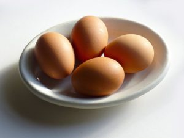

Working out can surely do wonders, but without a proper diet plan to go alongside is a complete waste of time. Diet is, therefore,
considered as one of the most important factors responsible for overall health, composition, and appearance of the body. In fact researchers around the world opine that cutting calories is not what works.
Instead, satisfying hunger with the right kind of food with changing needs from time to time does.
Every fitness freak out there understands this very simple fact without getting into the nitty-gritty of calorie counting.
So, before you begin to obsess over it, how about improving your health by changing your staple diet and your eating patterns.
Also known as carbs is the main source of energy for a body’s daily activities. They are nothing but small, simple chains of sugar that break down into glucose to enter the bloodstream of the body. Once consumed and broken down, it stays in the circulatory system to be used for immediate energy. Some, on the other hand, get stored in the form of glycogen for future use in the muscles and liver.
Fats are often assumed as the cause of rising obesity problems. Therefore, a lot of people without appropriate knowledge, avoid fat in every way. Whereas, the truth is fats make up an important part of the diet for a number of reasons. It provides the body with energy and storage spots for energy in the body.
Also known as carbs is the main source of energy for a body’s daily activities. They are nothing but small, simple chains of sugar that break down into glucose to enter the bloodstream of the body. Once consumed and broken down, it stays in the circulatory system to be used for immediate energy. Some, on the other hand, get stored in the form of glycogen for future use in the muscles and liver.
